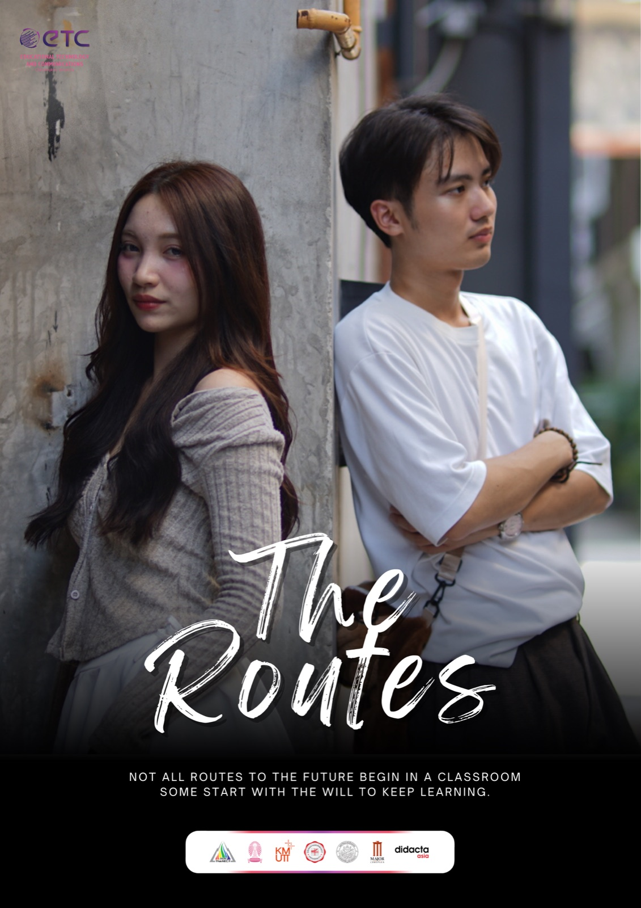
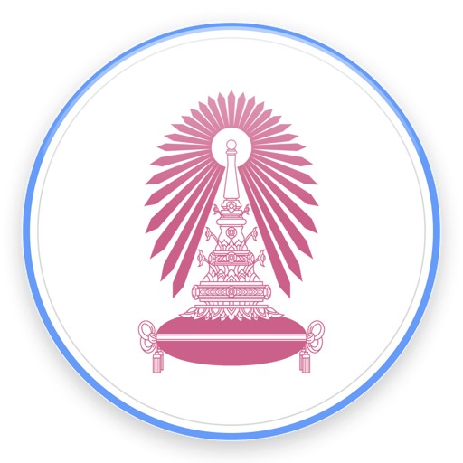
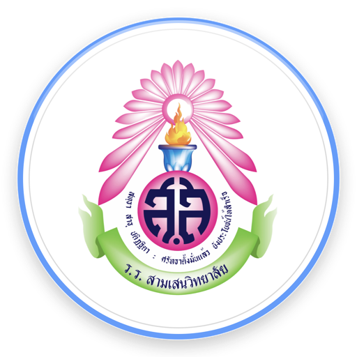

ผลงานที่อยากให้ดูก่อน
ผลงาน 3 ชิ้น
ที่ผมภูมิใจที่สุด

หนังสั้น · ปี 3
The Routes
ผมเป็นผู้กำกับ ถ่ายวิดีโอ และตัดต่อ ได้รางวัลบทภาพยนตร์ยอดเยี่ยม ThaiAECT Short Film Festival 2025 และได้ฉายในโรงภาพยนตร์ที่ One Bangkok

วิจัยในชั้นเรียน · ปี 4
สอน SketchUp ผ่านโลก Roblox
สร้างโลกเสมือนขึ้นเองเพื่อสอนโมเดล 3 มิติ คะแนนทักษะนักเรียน ม.5/11 เพิ่มจากร้อยละ 69 เป็น 93 ผ่านเกณฑ์ครบทั้งห้อง

เว็บนิทรรศการ 3 มิติ · ปี 3
Visura
ผมเป็นหัวหน้าโครงการ ทำเว็บด้วย WordPress สแกนงานศิลปะเป็นโมเดล 3 มิติด้วย LiDAR และฝัง AI Chatbot
272นักเรียนที่สอนตอนฝึกสอน 8 ห้อง
69→93%คะแนนทักษะก่อน-หลังวิจัย
2รางวัลหนังสั้น ระดับชาติและสมาคม
96ผู้เข้าอบรม AI ที่ผมเป็นวิทยากร
ติดต่อ
ติดต่อผม
ผมกำลังหางานครูเทคโนโลยี งานสื่อการศึกษา และงาน EdTech จบการศึกษาภายใน 3 ปีครึ่ง และพร้อมเริ่มงานทันทีหลังจบ
เครื่องมือที่ใช้งานได้
Premiere ProDaVinci ResolveFinal Cut ProAfter EffectsCapCutOBSPhotoshopIllustratorLightroomCanvaProcreateSketchUpRoblox StudioHeyGenGemini / ChatGPTReactGoogle Apps ScriptWordPress
การศึกษา
ครุศาสตรบัณฑิต สาขาวิชาเทคโนโลยีการศึกษา
คณะครุศาสตร์ จุฬาลงกรณ์มหาวิทยาลัย · จบภายใน 3 ปีครึ่ง
มัธยมศึกษา แผนวิทย์-คณิต โรงเรียนอยุธยาวิทยาลัย


จุฬาลงกรณ์มหาวิทยาลัย
โรงเรียนสามเสนวิทยาลัย · โรงเรียนอยุธยาวิทยาลัย
ครู · สื่อการศึกษา · EdTech
ครูเทคโนโลยี
ที่ทำสื่อเป็น
และเขียนโปรแกรมได้
ณัฐวุฒิ คงดีเพียร (สตางค์)
นิสิตชั้นปีที่ 4 สาขาวิชาเทคโนโลยีการศึกษา
คณะครุศาสตร์ จุฬาลงกรณ์มหาวิทยาลัย
สแกนเพื่อดูผลงานทั้งหมดเว็บพอร์ตโฟลิโอ มีวิดีโอ รูปผลงาน และรายงานการฝึกสอนฉบับเต็ม
nattawut-dotcom.github.io
เกี่ยวกับผม
เกี่ยวกับผม

ผมชื่อณัฐวุฒิ คงดีเพียร ชื่อเล่นสตางค์ เป็นนิสิตชั้นปีที่ 4 สาขาวิชาเทคโนโลยีการศึกษา คณะครุศาสตร์ จุฬาฯ คุณแม่ผมเป็นครู ผมเห็นท่านนำเทคโนโลยีมาใช้กับนักเรียนจริง จึงอยากเป็นครูที่ใช้เทคโนโลยีเป็น
"นักเรียนไม่ได้ขี้เกียจหรือไม่สนใจ แต่จะทุ่มเทให้กับสิ่งที่เห็นว่ามีประโยชน์กับตัวเองจริง"
บทเรียนที่ได้จากการฝึกประสบการณ์วิชาชีพครู ภาคต้น 2569
สิ่งที่ผมทำได้
การสอนและออกแบบการเรียนรู้
ออกแบบแผนการจัดการเรียนรู้และรูบริค · Game-based learning · วิจัยปฏิบัติการในชั้นเรียน · PLC · งานครูที่ปรึกษา
ผลิตสื่อ
กำกับ ถ่าย ตัดต่อวิดีโอ · ถ่ายทอดสดหลายกล้อง · ระบบเสียงงานอีเวนต์ · ถ่ายภาพสตูดิโอและมาโคร · กราฟิกและแอนิเมชัน 2D
เทคโนโลยีและ AI
เขียนเว็บแอปสำหรับครู (React, Apps Script) · WordPress · Roblox Studio · SketchUp · สแกน 3 มิติด้วย LiDAR · ใช้ AI ทำสื่อการสอน
การจัดการโครงการ
เขียนโครงการขอทุน · ประสานงานข้ามสถาบัน · ติดต่อขอสปอนเซอร์ · จัดทำรายงานสรุปโครงการ · เป็นวิทยากร
ปี 4 · ฝึกปฏิบัติการสอน
ฝึกสอนที่โรงเรียนสามเสนวิทยาลัย
ภาคเรียนที่ 1 ปีการศึกษา 2569 (11 พฤษภาคม – 30 กันยายน) รวม 450 ชั่วโมง ผมสอน 2 รายวิชา 8 ห้อง และเป็นครูที่ปรึกษาชั้น ม.6/4
วิจัยปฏิบัติการในชั้นเรียน · ม.5/11
การเรียนรู้โดยใช้เกมเป็นฐานผ่าน Roblox เพื่อพัฒนาทักษะ SketchUp
ผมพบว่านักเรียนสร้างโมเดลไม่ทันในคาบ จึงพัฒนาโลกเสมือน 6 พื้นที่ด้วย Roblox Studio ทดลองใช้ 3 วงจรกับนักเรียน 33 คน คะแนนทักษะเฉลี่ยเพิ่มจาก 6.94 เป็น 9.27 จากคะแนนเต็ม 10 และนักเรียนผ่านเกณฑ์จาก 5 คนเป็น 33 คน
เครื่องมือที่พัฒนาเอง
ระบบเช็คชื่อด้วย QR Code
เขียนด้วย React และ Google Apps Script ใช้จริงทุกห้อง ทำให้เช็คชื่อทั้งห้องใช้เวลาประมาณ 1 นาที และสรุปสถิติการเข้าเรียนให้อัตโนมัติ
การสอน ม.6 · 199 คน
แฟ้มสะสมผลงานยื่น TCAS และงาน PLC 4 รายวิชา
พานักเรียน 6 ห้องทำแฟ้มบนระบบ TCASFolio และเว็บพอร์ตโฟลิโอ ร่วมกับครู 3 กลุ่มสาระออกแบบภาระงานชิ้นเดียวที่เก็บคะแนนได้ 4 รายวิชา นักเรียนส่งงาน 193 คนและผ่านเกณฑ์ทุกคน
งานโสตทัศนศึกษาของโรงเรียน
ทำเกม AR และบูธวันวิทยาศาสตร์ ถ่ายและตัดต่อวิดีโอพิธีไหว้ครู และปฏิบัติงานฝ่ายโสตฯ งานประชุมวิชาการ พสวท. ระดับชาติ 3 วัน
ผลงานเรียงตามปีที่เรียน
จากชมรมในโรงเรียน
ถึงห้องเรียนที่ได้สอนจริง
มัธยม2562–65
ประธานชมรม AYW TV โรงเรียนอยุธยาวิทยาลัย · กำกับหนังสั้น "ตัวจริง" ได้เหรียญเงินระดับชาติ · เครื่องบินบังคับวิทยุได้เหรียญทองระดับเขต
ปี 12566
ทีมโสตฯ ค่ายอยากเป็นครู ครั้งที่ 17 · กล้องหลักวิดีโอพิธีไหว้ครูของคณะ · สอนนักเรียน ป.6 ทำแอนิเมชันด้วย Procreate
ปี 22567
ควบคุมการถ่ายทอดสดงานประชุมนานาชาติ OMEP ครั้งที่ 76 · รองหัวหน้าโครงการค่ายถ่ายภาพที่ได้รับทุนจากคณะ · ภาพถ่ายได้จัดแสดงในนิทรรศการ Journey Through the Lens
ปี 32568
หนังสั้น The Routes ได้รางวัลบทภาพยนตร์ยอดเยี่ยม · หัวหน้าโครงการเว็บ Visura · วิทยากรอบรม AI Empowered Educator มีผู้เข้าอบรม 96 คน · ออกแบบกราฟิกงาน Chula Townhall 2026
ปี 42569
ฝึกปฏิบัติการสอนที่โรงเรียนสามเสนวิทยาลัย สอน 272 คน ทำวิจัยในชั้นเรียน และพัฒนาระบบเช็คชื่อ QR Code
รางวัล
- รางวัลบทภาพยนตร์ยอดเยี่ยม ThaiAECT Short Film Festival 2025
- เหรียญเงินระดับชาติ ภาพยนตร์สั้น งานศิลปหัตถกรรมนักเรียน ครั้งที่ 69
- เหรียญทองระดับเขต อากาศยานบังคับวิทยุ ครั้งที่ 70
- ทุนโครงการเสริมประสบการณ์การเรียนรู้สู่โลกกว้าง คณะครุศาสตร์ จุฬาฯ